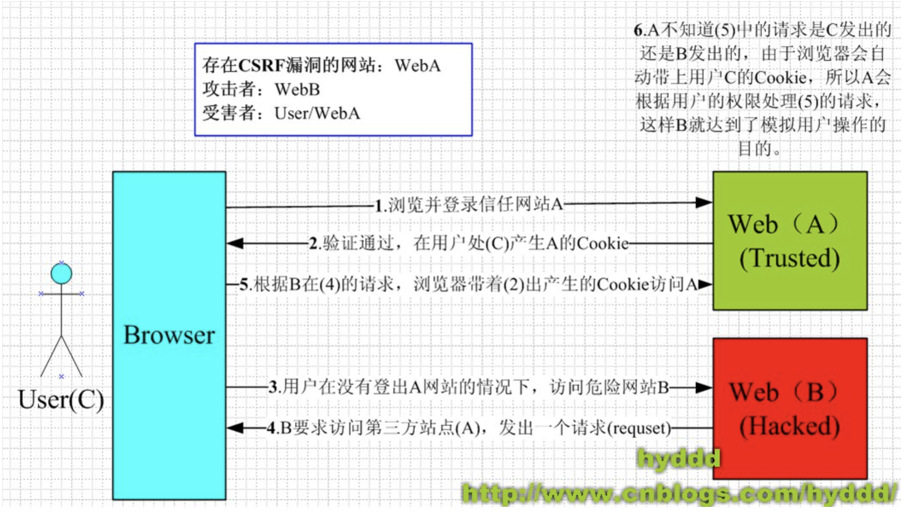
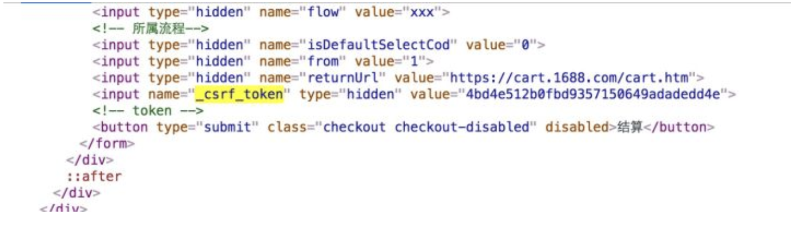
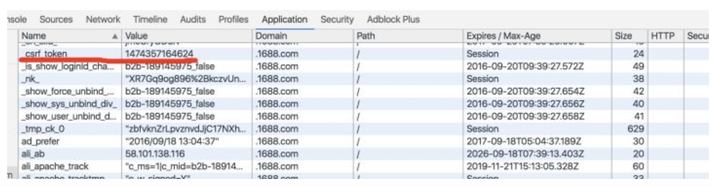

<!DOCTYPE html>
<html lang="en">
    
<head>
    <meta charset="UTF-8">
    <meta name="viewport" content="width=device-width, initial-scale=1">
    <meta name="generator" content="-Xiang Yu&#39;s Blog-">
    <title>CSRF攻击及防范措施 - -Xiang Yu&#39;s Blog-</title>
    <meta name="author" content="Xiang Yu (向 宇)">
    
        <meta name="keywords" content="CSRF,CSRF攻击及防范措施">
    
    
    
        <link rel="alternate" type="application/atom+xml" title="RSS" href="/atom.xml">
    
    <script type="application/ld+json">{"@context":"http://schema.org","@type":"BlogPosting","author":{"@type":"Person","name":"Xiang Yu (向 宇)","sameAs":["https://github.com/","https://facebook.com/","mailto"],"image":"cat.jpg"},"articleBody":"CSRF是什么CSRF全称为跨站请求伪造（Cross-site request forgery），是一种网络攻击方式，也被称为 one-click attack 或者 session riding。简单说来就是已经利用登陆成功的User强制实行某些操作的恶意攻击行为。\n\nCSRF攻击原理其原理是攻击者构造网站后台某个功能接口的请求地址，诱导用户去点击或者用特殊方法让该请求地址自动加载。用户在登录状态下这个请求被服务端接收后会被误以为是用户合法的操作。对于 GET 形式的接口地址可轻易被攻击，对于 POST 形式的接口地址也不是百分百安全，攻击者可诱导用户进入带 Form 表单可用POST方式提交参数的页面。\n\nCSRF攻击流程\n角色：\n\n正常浏览网页的用户： User\n正规的但是具有漏洞的网站： WebA\n利用CSRF进行攻击百度网站： WebB\n例子：比如有shop.example.com这样一个购物网站，用户通过用户名和密码可以登录。其中有点击按钮重设密码的功能。当用户点击按钮更改密码时，下图的送信请求将会被提交至WebA的服务器\n12345URL： http://shop.example.com/password/changeParmeter: new_pass:XXXXX new_pass_conf:XXXXX\n\n\n  1.User正常登陆网页WebA，WebA通过用户的认证并在User的浏览器中产生Cookie(证明是User本人登陆)\n  2.攻击者伪造能发送同样请求的网站WebB。利用简单的Javascript便可达到目的。\n  3.攻击者把该伪造的网站的URL放到img的src里上传，当User登陆后，打开网页时便会自动加载图片，WebB会利用用户的浏览器访问WebA。  由于User是在登录状态下，所以User的浏览器根据WebB的要求，带着1中生成的Cookie访问WebA。\n  4.WebA接收到User浏览器的请求，并带着用户的Cookie(如例子中的请求)，要求改\b修改密码。\n  5.WebA误以为是用户的操作，响应修改密码的请求。User密码被盗。\n  以上Web便达到了在用户不知情的情况下，利用用户登陆后的Cookie进行用户的模拟操作过程。\n\nCSRF防范措施  1.服务端在收到路由请求时，生成一个随机数，在渲染请求页面时把随机数埋入页面  （一般埋入 form 表单内，）\n  2.服务端设置setCookie，把该随机数作为session种入用户浏览器。  (加入保存在Cookie中，旧Token消耗后，新的Token会被生成，造成用户混乱。而Session能避免此问题。)\n  3.当用户发送 GET 或者 POST 请求时带上_csrf_token参数  （对于 Form 表单直接提交即可，因为会自动把当前表单内所有的 input 提交给后台，包括_csrf_token）\n  4.后台在接受到请求后解析请求的cookie获取_csrf_token的值，然后和用户请求提交的_csrf_token做个比较，如果相等表示请求是合法的。\n（下图是某电商网站的真实设置，这里页面上设置的 token和session里设置的token 虽然不直接相等，但 md5(‘1474357164624’) === ‘4bd4e512b0fbd9357150649adadedd4e’，后台还是很好计算的）\n   \n  注意：尽量避免使用Get。因为能在发送请求时能在URL处暴露token信息。\n\n参考：\n「每日一题」CSRF 是什么？ https://zhuanlan.zhihu.com/p/22521378\nCSRF攻击原理及防护 https://www.jianshu.com/p/00fa457f6d3e\n\n","dateCreated":"2018-10-14T16:28:58+09:00","dateModified":"2019-02-23T19:06:55+09:00","datePublished":"2018-10-14T16:28:58+09:00","description":"CSRF是什么CSRF全称为跨站请求伪造（Cross-site request forgery），","headline":"CSRF攻击及防范措施","image":["20181014-4.jpg","20181014-4.jpg"],"mainEntityOfPage":{"@type":"WebPage","@id":"https://kisky3.github.io/2018/10/14/CSRF攻击及防范措施/"},"publisher":{"@type":"Organization","name":"Xiang Yu (向 宇)","sameAs":["https://github.com/","https://facebook.com/","mailto"],"image":"cat.jpg","logo":{"@type":"ImageObject","url":"cat.jpg"}},"url":"https://kisky3.github.io/2018/10/14/CSRF攻击及防范措施/","keywords":"Network Security","thumbnailUrl":"20181014-4.jpg"}</script>
    <meta name="description" content="CSRF是什么CSRF全称为跨站请求伪造（Cross-site request forgery），">
<meta name="keywords" content="CSRF,CSRF攻击及防范措施">
<meta property="og:type" content="blog">
<meta property="og:title" content="CSRF攻击及防范措施">
<meta property="og:url" content="https://kisky3.github.io/2018/10/14/CSRF攻击及防范措施/index.html">
<meta property="og:site_name" content="-Xiang Yu&#39;s Blog-">
<meta property="og:description" content="CSRF是什么CSRF全称为跨站请求伪造（Cross-site request forgery），">
<meta property="og:locale" content="en">
<meta property="og:image" content="https://kisky3.github.io/2018/10/14/CSRF攻击及防范措施/1.png">
<meta property="og:image" content="https://kisky3.github.io/2018/10/14/CSRF攻击及防范措施/2.png">
<meta property="og:image" content="https://kisky3.github.io/2018/10/14/CSRF攻击及防范措施/3.png">
<meta property="og:updated_time" content="2019-02-23T10:06:55.716Z">
<meta name="twitter:card" content="summary">
<meta name="twitter:title" content="CSRF攻击及防范措施">
<meta name="twitter:description" content="CSRF是什么CSRF全称为跨站请求伪造（Cross-site request forgery），">
<meta name="twitter:image" content="https://kisky3.github.io/2018/10/14/CSRF攻击及防范措施/1.png">
    
    
        
    
    
        <meta property="og:image" content="https://kisky3.github.io/assets/images/cat.jpg"/>
    
    
        <meta property="og:image" content="https://kisky3.github.io/2018/10/14/CSRF攻击及防范措施/20181014-4.jpg"/>
        <meta class="swiftype" name="image" data-type="enum" content="https://kisky3.github.io/2018/10/14/CSRF攻击及防范措施/20181014-4.jpg" />
    
    
        <meta property="og:image" content="https://kisky3.github.io/2018/10/14/CSRF攻击及防范措施/20181014-4.jpg"/>
        <meta class="swiftype" name="image" data-type="enum" content="https://kisky3.github.io/2018/10/14/CSRF攻击及防范措施/20181014-4.jpg" />
    
    
    <!--STYLES-->
    <link rel="stylesheet" href="/assets/css/style-du2xmrqdqrl2ollgeiw050kpl6l4nbyz7bumjuurjgsxyopifvukebxc9lqe.min.css">
    <!--STYLES END-->
    
    <script type="text/javascript">
        (function(i,s,o,g,r,a,m){i['GoogleAnalyticsObject']=r;i[r]=i[r]||function(){
        (i[r].q=i[r].q||[]).push(arguments)},i[r].l=1*new Date();a=s.createElement(o),
        m=s.getElementsByTagName(o)[0];a.async=1;a.src=g;m.parentNode.insertBefore(a,m)
        })(window,document,'script','//www.google-analytics.com/analytics.js','ga');

        ga('create', 'UA-135079303-1', 'auto');
        ga('send', 'pageview');
    </script>


    
</head>

    <body>
        <div id="blog">
            <!-- Define author's picture -->


    
        
            
        
    

<header id="header" data-behavior="4">
    <i id="btn-open-sidebar" class="fa fa-lg fa-bars"></i>
    <div class="header-title">
        <a class="header-title-link" href="/ ">-Xiang Yu&#39;s Blog-</a>
    </div>
    
        
            <a  class="header-right-picture "
                href="#about">
        
        
            
        
        </a>
    
</header>

            <!-- Define author's picture -->


        
    

<nav id="sidebar" data-behavior="4">
    <div class="sidebar-container">
        
            <div class="sidebar-profile">
                <a href="/#about">
                    
                </a>
                <h4 class="sidebar-profile-name">Xiang Yu (向 宇)</h4>
                
                    <h5 class="sidebar-profile-bio"><p>Hello Programming,Hello World</p>
</h5>
                
            </div>
        
        
            <ul class="sidebar-buttons">
            
                <li class="sidebar-button">
                    
                        <a  class="sidebar-button-link "
                             href="/ "
                            
                            title="Home"
                        >
                    
                        <i class="sidebar-button-icon fa fa-home" aria-hidden="true"></i>
                        <span class="sidebar-button-desc">Home</span>
                    </a>
            </li>
            
                <li class="sidebar-button">
                    
                        <a  class="sidebar-button-link "
                             href="/all-categories"
                            
                            title="Categories"
                        >
                    
                        <i class="sidebar-button-icon fa fa-bookmark" aria-hidden="true"></i>
                        <span class="sidebar-button-desc">Categories</span>
                    </a>
            </li>
            
                <li class="sidebar-button">
                    
                        <a  class="sidebar-button-link "
                             href="/all-tags"
                            
                            title="Tags"
                        >
                    
                        <i class="sidebar-button-icon fa fa-tags" aria-hidden="true"></i>
                        <span class="sidebar-button-desc">Tags</span>
                    </a>
            </li>
            
                <li class="sidebar-button">
                    
                        <a  class="sidebar-button-link "
                             href="/all-archives"
                            
                            title="Archives"
                        >
                    
                        <i class="sidebar-button-icon fa fa-archive" aria-hidden="true"></i>
                        <span class="sidebar-button-desc">Archives</span>
                    </a>
            </li>
            
                <li class="sidebar-button">
                    
                        <a  class="sidebar-button-link open-algolia-search"
                             href="#search"
                            
                            title="Search"
                        >
                    
                        <i class="sidebar-button-icon fa fa-search" aria-hidden="true"></i>
                        <span class="sidebar-button-desc">Search</span>
                    </a>
            </li>
            
        </ul>
        
            <ul class="sidebar-buttons">
            
                <li class="sidebar-button">
                    
                        <a  class="sidebar-button-link " href="https://github.com/" target="_blank" rel="noopener" title="GitHub">
                    
                        <i class="sidebar-button-icon fab fa-github" aria-hidden="true"></i>
                        <span class="sidebar-button-desc">GitHub</span>
                    </a>
            </li>
            
                <li class="sidebar-button">
                    
                        <a  class="sidebar-button-link " href="https://facebook.com/" target="_blank" rel="noopener" title="Facebook">
                    
                        <i class="sidebar-button-icon fab fa-facebook" aria-hidden="true"></i>
                        <span class="sidebar-button-desc">Facebook</span>
                    </a>
            </li>
            
                <li class="sidebar-button">
                    
                        <a  class="sidebar-button-link "
                             href="/mailto"
                            title="Mail"
                        >
                    
                        <i class="sidebar-button-icon fa fa-envelope" aria-hidden="true"></i>
                        <span class="sidebar-button-desc">Mail</span>
                    </a>
            </li>
            
        </ul>
        
    </div>
</nav>

            
        <div class="post-header-cover
                    text-left
                    post-header-cover--partial"
             style="background-image:url('/2018/10/14/CSRF攻击及防范措施/20181014-4.jpg');"
             data-behavior="4">
            
                <div class="post-header main-content-wrap text-left">
    
        <h1 class="post-title">
            CSRF攻击及防范措施
        </h1>
    
    
        <div class="post-meta">
    <time datetime="2018-10-14T16:28:58+09:00">
	
		    Oct 14, 2018
    	
    </time>
    
        <span>in </span>
        
    <a class="category-link" href="/categories/Front-End-Knowledge/">Front End Knowledge</a>


    
</div>

    
</div>

            
        </div>

            <div id="main" data-behavior="4"
                 class="hasCover
                        hasCoverMetaIn
                        ">
                
<article class="post">
    
    
    <div class="post-content markdown">
        <div class="main-content-wrap">
            <h3 id="CSRF是什么"><a href="#CSRF是什么" class="headerlink" title="CSRF是什么"></a>CSRF是什么</h3><p>CSRF全称为跨站请求伪造（Cross-site request forgery），<br><a id="more"></a><br>是一种网络攻击方式，也被称为 one-click attack 或者 session riding。<br>简单说来就是已经利用登陆成功的User强制实行某些操作的恶意攻击行为。</p>
<hr>
<h3 id="CSRF攻击原理"><a href="#CSRF攻击原理" class="headerlink" title="CSRF攻击原理"></a>CSRF攻击原理</h3><p>其原理是攻击者构造网站后台某个功能接口的请求地址，诱导用户去点击或者用特殊方法让该请求地址自动加载。用户在登录状态下这个请求被服务端接收后会被误以为是用户合法的操作。对于 GET 形式的接口地址可轻易被攻击，对于 POST 形式的接口地址也不是百分百安全，攻击者可诱导用户进入带 Form 表单可用POST方式提交参数的页面。</p>
<hr>
<h3 id="CSRF攻击流程"><a href="#CSRF攻击流程" class="headerlink" title="CSRF攻击流程"></a>CSRF攻击流程</h3><p></p>
<p>角色：</p>
<ul>
<li>正常浏览网页的用户： User</li>
<li>正规的但是具有漏洞的网站： WebA</li>
<li><p>利用CSRF进行攻击百度网站： WebB</p>
<p>例子：<br>比如有shop.example.com这样一个购物网站，用户通过用户名和密码可以登录。其中有点击按钮重设密码的功能。<br>当用户点击按钮更改密码时，下图的送信请求将会被提交至WebA的服务器</p>
<figure class="highlight plain"><table><tr><td class="gutter"><pre><span class="line">1</span><br><span class="line">2</span><br><span class="line">3</span><br><span class="line">4</span><br><span class="line">5</span><br></pre></td><td class="code"><pre><span class="line">URL：</span><br><span class="line"> http://shop.example.com/password/change</span><br><span class="line">Parmeter:</span><br><span class="line"> new_pass:XXXXX</span><br><span class="line"> new_pass_conf:XXXXX</span><br></pre></td></tr></table></figure>
</li>
</ul>
<p>  1.User正常登陆网页WebA，WebA通过用户的认证并在User的浏览器中产生Cookie(证明是User本人登陆)</p>
<p>  2.攻击者伪造能发送同样请求的网站WebB。利用简单的Javascript便可达到目的。</p>
<p>  3.攻击者把该伪造的网站的URL放到img的src里上传，当User登陆后，打开网页时便会自动加载图片，WebB会利用用户的浏览器访问WebA。<br>  由于User是在登录状态下，所以User的浏览器根据WebB的要求，带着1中生成的Cookie访问WebA。</p>
<p>  4.WebA接收到User浏览器的请求，并带着用户的Cookie(如例子中的请求)，要求改修改密码。</p>
<p>  5.WebA误以为是用户的操作，响应修改密码的请求。User密码被盗。</p>
<p>  以上Web便达到了在用户不知情的情况下，利用用户登陆后的Cookie进行用户的模拟操作过程。</p>
<hr>
<h3 id="CSRF防范措施"><a href="#CSRF防范措施" class="headerlink" title="CSRF防范措施"></a>CSRF防范措施</h3><p>  1.服务端在收到路由请求时，生成一个随机数，在渲染请求页面时把随机数埋入页面<br>  （一般埋入 form 表单内，<input type="hidden" name="_csrf_token" value="xxxx">）</p>
<p>  2.服务端设置setCookie，把该随机数作为session种入用户浏览器。<br>  (加入保存在Cookie中，旧Token消耗后，新的Token会被生成，造成用户混乱。而Session能避免此问题。)</p>
<p>  3.当用户发送 GET 或者 POST 请求时带上_csrf_token参数<br>  （对于 Form 表单直接提交即可，因为会自动把当前表单内所有的 input 提交给后台，包括_csrf_token）</p>
<p>  4.后台在接受到请求后解析请求的cookie获取_csrf_token的值，然后和用户请求提交的_csrf_token做个比较，如果相等表示请求是合法的。</p>
<p>（下图是某电商网站的真实设置，这里页面上设置的 token和session里设置的token 虽然不直接相等，但 md5(‘1474357164624’) === ‘4bd4e512b0fbd9357150649adadedd4e’，后台还是很好计算的）</p>
<p>   <br><br><br></p>
<p>  注意：尽量避免使用Get。因为能在发送请求时能在URL处暴露token信息。</p>
<hr>
<h3 id="参考："><a href="#参考：" class="headerlink" title="参考："></a>参考：</h3><ul>
<li>「每日一题」CSRF 是什么？<br> <a href="https://zhuanlan.zhihu.com/p/22521378" target="_blank" rel="noopener">https://zhuanlan.zhihu.com/p/22521378</a></li>
<li>CSRF攻击原理及防护<br> <a href="https://www.jianshu.com/p/00fa457f6d3e" target="_blank" rel="noopener">https://www.jianshu.com/p/00fa457f6d3e</a></li>
</ul>

            

        </div>
    </div>
    <div id="post-footer" class="post-footer main-content-wrap">
        
            <div class="post-footer-tags">
                <span class="text-color-light text-small">TAGGED IN</span><br/>
                
    <a class="tag tag--primary tag--small t-link" href="/tags/Network-Security/">Network Security</a>

            </div>
        
        
            <div class="post-actions-wrap">
    <nav>
        <ul class="post-actions post-action-nav">
            <li class="post-action">
                
                    
                    <a class="post-action-btn btn btn--default tooltip--top" href="/2018/10/14/常见浏览器及浏览器内核/" data-tooltip="常见浏览器及浏览器内核" aria-label="PREVIOUS: 常见浏览器及浏览器内核">
                
                    <i class="fa fa-angle-left" aria-hidden="true"></i>
                    <span class="hide-xs hide-sm text-small icon-ml">PREVIOUS</span>
                </a>
            </li>
            <li class="post-action">
                
                    
                    <a class="post-action-btn btn btn--default tooltip--top" href="/2018/10/14/Get和Post提交数据有什么区别/" data-tooltip="Get和Post提交数据有什么区别" aria-label="NEXT: Get和Post提交数据有什么区别">
                
                    <span class="hide-xs hide-sm text-small icon-mr">NEXT</span>
                    <i class="fa fa-angle-right" aria-hidden="true"></i>
                </a>
            </li>
        </ul>
    </nav>
    <ul class="post-actions post-action-share">
        <li class="post-action hide-lg hide-md hide-sm">
            <a class="post-action-btn btn btn--default btn-open-shareoptions" href="#btn-open-shareoptions" aria-label="Share this post">
                <i class="fa fa-share-alt" aria-hidden="true"></i>
            </a>
        </li>
        
            
            
            <li class="post-action hide-xs">
                <a class="post-action-btn btn btn--default" target="new" href="https://www.facebook.com/sharer/sharer.php?u=https://kisky3.github.io/2018/10/14/CSRF攻击及防范措施/" title="Share on Facebook">
                    <i class="fab fa-facebook" aria-hidden="true"></i>
                </a>
            </li>
        
            
            
            <li class="post-action hide-xs">
                <a class="post-action-btn btn btn--default" target="new" href="https://twitter.com/intent/tweet?text=https://kisky3.github.io/2018/10/14/CSRF攻击及防范措施/" title="Share on Twitter">
                    <i class="fab fa-twitter" aria-hidden="true"></i>
                </a>
            </li>
        
            
            
            <li class="post-action hide-xs">
                <a class="post-action-btn btn btn--default" target="new" href="https://plus.google.com/share?url=https://kisky3.github.io/2018/10/14/CSRF攻击及防范措施/" title="Share on Google+">
                    <i class="fab fa-google-plus" aria-hidden="true"></i>
                </a>
            </li>
        
            
            
            <li class="post-action hide-xs">
                <a class="post-action-btn btn btn--default" target="new" href="http://connect.qq.com/widget/shareqq/index.html?url=https://kisky3.github.io/2018/10/14/CSRF攻击及防范措施/&amp;title=CSRF攻击及防范措施" title="Share on QQ">
                    <i class="fab fa-qq" aria-hidden="true"></i>
                </a>
            </li>
        
        
            
        
        <li class="post-action">
            
                <a class="post-action-btn btn btn--default" href="#" aria-label="Back to top">
            
                <i class="fa fa-list" aria-hidden="true"></i>
            </a>
        </li>
    </ul>
</div>


        
        
            
        
    </div>
</article>


                <footer id="footer" class="main-content-wrap">
    <span class="copyrights">
        Copyrights &copy; 2019 Xiang Yu (向 宇). All Rights Reserved.
    </span>
</footer>

            </div>
            
                <div id="bottom-bar" class="post-bottom-bar" data-behavior="4">
                    <div class="post-actions-wrap">
    <nav>
        <ul class="post-actions post-action-nav">
            <li class="post-action">
                
                    
                    <a class="post-action-btn btn btn--default tooltip--top" href="/2018/10/14/常见浏览器及浏览器内核/" data-tooltip="常见浏览器及浏览器内核" aria-label="PREVIOUS: 常见浏览器及浏览器内核">
                
                    <i class="fa fa-angle-left" aria-hidden="true"></i>
                    <span class="hide-xs hide-sm text-small icon-ml">PREVIOUS</span>
                </a>
            </li>
            <li class="post-action">
                
                    
                    <a class="post-action-btn btn btn--default tooltip--top" href="/2018/10/14/Get和Post提交数据有什么区别/" data-tooltip="Get和Post提交数据有什么区别" aria-label="NEXT: Get和Post提交数据有什么区别">
                
                    <span class="hide-xs hide-sm text-small icon-mr">NEXT</span>
                    <i class="fa fa-angle-right" aria-hidden="true"></i>
                </a>
            </li>
        </ul>
    </nav>
    <ul class="post-actions post-action-share">
        <li class="post-action hide-lg hide-md hide-sm">
            <a class="post-action-btn btn btn--default btn-open-shareoptions" href="#btn-open-shareoptions" aria-label="Share this post">
                <i class="fa fa-share-alt" aria-hidden="true"></i>
            </a>
        </li>
        
            
            
            <li class="post-action hide-xs">
                <a class="post-action-btn btn btn--default" target="new" href="https://www.facebook.com/sharer/sharer.php?u=https://kisky3.github.io/2018/10/14/CSRF攻击及防范措施/" title="Share on Facebook">
                    <i class="fab fa-facebook" aria-hidden="true"></i>
                </a>
            </li>
        
            
            
            <li class="post-action hide-xs">
                <a class="post-action-btn btn btn--default" target="new" href="https://twitter.com/intent/tweet?text=https://kisky3.github.io/2018/10/14/CSRF攻击及防范措施/" title="Share on Twitter">
                    <i class="fab fa-twitter" aria-hidden="true"></i>
                </a>
            </li>
        
            
            
            <li class="post-action hide-xs">
                <a class="post-action-btn btn btn--default" target="new" href="https://plus.google.com/share?url=https://kisky3.github.io/2018/10/14/CSRF攻击及防范措施/" title="Share on Google+">
                    <i class="fab fa-google-plus" aria-hidden="true"></i>
                </a>
            </li>
        
            
            
            <li class="post-action hide-xs">
                <a class="post-action-btn btn btn--default" target="new" href="http://connect.qq.com/widget/shareqq/index.html?url=https://kisky3.github.io/2018/10/14/CSRF攻击及防范措施/&amp;title=CSRF攻击及防范措施" title="Share on QQ">
                    <i class="fab fa-qq" aria-hidden="true"></i>
                </a>
            </li>
        
        
            
        
        <li class="post-action">
            
                <a class="post-action-btn btn btn--default" href="#" aria-label="Back to top">
            
                <i class="fa fa-list" aria-hidden="true"></i>
            </a>
        </li>
    </ul>
</div>


                </div>
                <div id="share-options-bar" class="share-options-bar" data-behavior="4">
    <i id="btn-close-shareoptions" class="fa fa-times"></i>
    <ul class="share-options">
        
            
            
            <li class="share-option">
                <a class="share-option-btn" target="new" href="https://www.facebook.com/sharer/sharer.php?u=https://kisky3.github.io/2018/10/14/CSRF攻击及防范措施/">
                    <i class="fab fa-facebook" aria-hidden="true"></i><span>Share on Facebook</span>
                </a>
            </li>
        
            
            
            <li class="share-option">
                <a class="share-option-btn" target="new" href="https://twitter.com/intent/tweet?text=https://kisky3.github.io/2018/10/14/CSRF攻击及防范措施/">
                    <i class="fab fa-twitter" aria-hidden="true"></i><span>Share on Twitter</span>
                </a>
            </li>
        
            
            
            <li class="share-option">
                <a class="share-option-btn" target="new" href="https://plus.google.com/share?url=https://kisky3.github.io/2018/10/14/CSRF攻击及防范措施/">
                    <i class="fab fa-google-plus" aria-hidden="true"></i><span>Share on Google+</span>
                </a>
            </li>
        
            
            
            <li class="share-option">
                <a class="share-option-btn" target="new" href="http://connect.qq.com/widget/shareqq/index.html?url=https://kisky3.github.io/2018/10/14/CSRF攻击及防范措施/&amp;title=CSRF攻击及防范措施">
                    <i class="fab fa-qq" aria-hidden="true"></i><span>Share on QQ</span>
                </a>
            </li>
        
    </ul>
</div>

            
        </div>
        


    
        
    

<div id="about">
    <div id="about-card">
        <div id="about-btn-close">
            <i class="fa fa-times"></i>
        </div>
        
            
        
            <h4 id="about-card-name">Xiang Yu (向 宇)</h4>
        
            <div id="about-card-bio"><p>Hello Programming,Hello World</p>
</div>
        
        
            <div id="about-card-job">
                <i class="fa fa-briefcase"></i>
                <br/>
                <p>Front-end Engineer</p>

            </div>
        
        
            <div id="about-card-location">
                <i class="fa fa-map-marker-alt"></i>
                <br/>
                Tokyo
            </div>
        
    </div>
</div>

        
        
<div id="cover" style="background-image:url('/assets/images/images.jpg');"></div>
        <!--SCRIPTS-->
<script src="/assets/js/script-vufjrm3fmbuttogo1hxuu0w9w0sesk5iyysjuguc2hdhufot9szxg8twijry.min.js"></script>
<!--SCRIPTS END-->

    


    </body>
</html>
